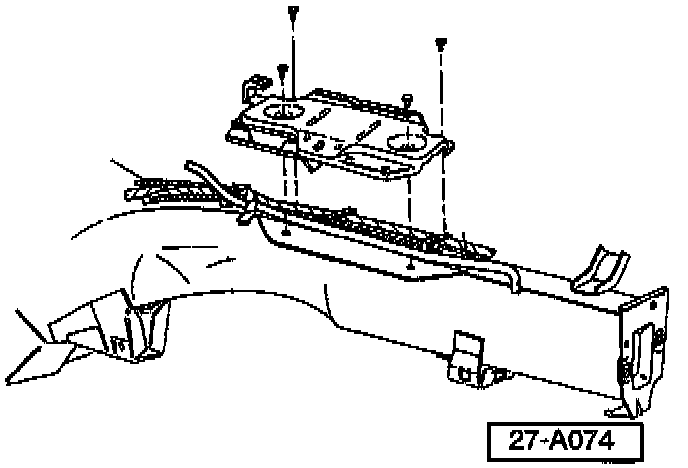

Instrument Cluster - Functions Erratically
Group: 97Number: 96-01
Date: Nov. 11, 1996
Subject:
Erratic Electrical Functions
(Instrument cluster functions erratically, MIL is ON)
Model(s):
Golf, GTI, Jetta 1997 to 1H_VM022383
Condition
Various erratic electrical functions (instrument cluster functions erratically, Malfunction Indicator Lamp (MIL) is on, Oxygen sensor Diagnostic trouble codes may be stored in DTC memory).
Condition may be caused by loose ground at one of two grounding studs located under the battery tray.
Service
If a vehicle exhibits this condition:
- Obtain customers radio code and note preset radio stations.

- Disconnect battery ground (GND) cable.
- Disconnect battery positive (B+) cable.
- Remove battery.

- Remove battery tray.

Locate ground studs -A-.
- Check ground connections at studs, terminals must be:
^ Tight
^ Free of corrosion
^ Securely crimped to wires
If terminals are loose on the stud:
- Torque cap nut to 7.5 Nm (66 in. lb).
Check that terminals are tight.
- Reinstall battery tray.
- Reinstall battery.
- Re-connect battery positive (B+) cable.
- Re-connect battery ground cable.
- Re-code radio and re-program customers preset radio stations.
- Connect VAG 1551 and erase any stored Diagnostic Trouble Codes.
When procedure applies to vehicles within warranty use the following:
Part Identifier: 9798
Labor Operation: 9798510 35TU